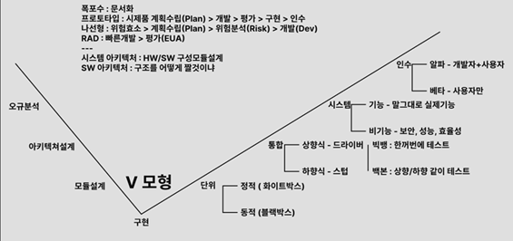
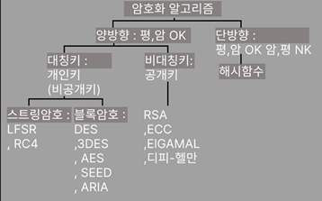
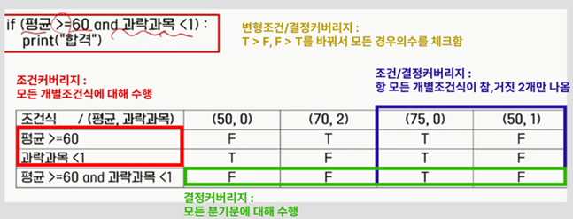
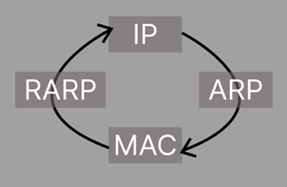
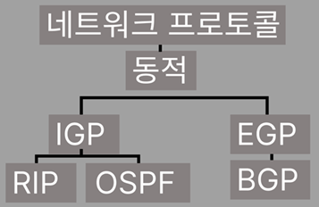

| 분류 | 앞글자 | 한글이름 | 영어이름 | 의미/주요기능 | 핵심단어 |
|---|---|---|---|---|---|
| 생성 | 추 | 추상팩토리 | Abstract Factory | 관련된 객체들의 집합을 생성하는 인터페이스 제공 | 집합, 인터페이스 |
| 빌 | 빌더 | Builder | 복잡한 객체의 생성 과정과 표현 방법을 분리 | 생성 과정, 표현 방법 | |
| 팩 | 팩토리 메서드 | Factory Method | 객체 생성을 서브클래스에 위임 | 서브클래스 | |
| 프 | 프로토타입 | Prototype | 기존 객체를 복제하여 새 객체 생성 | 복제 | |
| 싱 | 싱글턴 | Singleton | 클래스의 인스턴스가 하나만 생성되도록 보장 | 인스턴스가 하나 | |
| 구조 | 어 | 어댑터 | Adapter | 호환되지 않는 인터페이스들을 연결 | 인터페이스 |
| 데 | 데코레이터 | Decorator | 객체에 동적으로 새로운 책임 추가 | 동적, 책임 | |
| 컴 | 컴포지트 | Composite | 객체들을 트리 구조로 구성하여 부분-전체 계층 표현 | 트리 구조, 부분-전체 | |
| 브 | 브릿지 | Bridge | 추상화와 구현을 분리하여 독립적으로 변화 가능하게 함 | 추상화, 구현 | |
| 퍼 | 퍼사드 | Facade | 서브시스템에 대한 통합된 단순화된 인터페이스 제공 | 통합된 단순화 | |
| 프 | 프록시 | Proxy | 다른 객체에 대한 접근을 제어하는 대리자 객체 제공 | 접근을 제어 | |
| 플 | 플라이웨이트 | Flyweight | 작은 객체들을 공유하여 메모리 사용량 절감 | 공유 | |
| 행위 | 체 | 책임연쇄 | Chain of Responsibility | 요청을 처리할 수 있는 기회를 하나 이상의 객체에게 부여 | 하나 이상 |
| 크(커) | 커맨드 | Command | 요청을 객체로 캡슐화하여 매개변수화 | 객체 | |
| 메 | 메멘토 | Memento | 객체의 내부 상태를 저장하고 복원 | 내부 상태 저장/복원 | |
| 이 | 이터레이터 | Iterator | 집합 객체의 요소들을 순차적으로 접근 | 순차적 | |
| 트(템) | 템플릿 메서드 | Template Method | 알고리즘의 골격을 정의하고 일부 단계를 서브클래스에서 구현 | 골격 | |
| 웁(옵) | 옵서버 | Observer | 객체 상태 변화를 다른 객체에 통지 | 통지 | |
| 스 | 스테이트 | State | 객체의 내부 상태에 따라 행위를 변경 | 내부 상태 행위/변경 | |
| 스! | 스트래티지 | Strategy | 알고리즘을 캡슐화하고 교체 가능하게 만듦 | 알고리즘 | |
| 인 | 인터프리터 | Interpreter | 언어의 문법 표현을 정의하고 해석 | 문법 | |
| 마!(미) | 미디에이터 | Mediator | 객체 간의 복잡한 통신과 제어를 캡슐화 | 복잡한 통신 | |
| 삐!!!(비) | 비지터 | Visitor | 객체 구조를 변경하지 않고 새로운 동작 정의 | 동작 |
| 분류 | 한글이름 | 영어이름 | 의미/주요기능 | 핵심단어 |
|---|---|---|---|---|
| 프로토콜 | 요구사항분석 | Requirements Analysis | 시스템 요구사항을 체계적으로 분석 | 요구사항분석 |
| 프로토콜 | Protocol | 구문(Syntax), 타이밍(Timing), 의미(Semantic) | 구문, 타이밍, 의미 | |
| SW 3R | Software 3R | 역공학, 재공학, 재사용 | 역공학, 재공학, 재사용 | |
| 시스템 통합 | ESB | Enterprise Service Bus | 기업 안팎의 서비스 통합 | BUS |
| EAI | Enterprise Application Integration | Point to Point 방식 | Point to Point | |
| Hub and Spoke | Hub and Spoke | 중앙 허브를 통한 통합 방식 | Hub and Spoke | |
| Message Bus | Message Bus | 메시지 버스를 통한 통합 | Message Bus | |
| SOAP | Simple Object Access Protocol | XML기반 메시지 교환 프로토콜 | XML기반 | |
| UDDI | Universal Description Discovery Integration | 웹 서비스 레지스트리(도서관) | 도서관 |
| 분류 | 방법론 | 특징 | 주요 도구/기법 | 핵심단어 |
|---|---|---|---|---|
| 1. 구조적 방법론 | 하향식 절차지향 | 절차지향적 접근 방식 | 도출(Elication) > 분석(Analysis) > 명세(Specification) > 확인 | 하향식 절차지향 |
| DFD | 데이터 흐름도 | 프로세스와 데이터 흐름 표현 | 흐름도 | |
| DD | 자료사전 | 데이터 정의 및 관리 | 자료사전 | |
| MINI-SPEC | 소단위 명세서 | 세부 프로세스 명세 | 소단위 명세서 | |
| ERD | 개체관계도 | 데이터베이스 구조 설계 | 개체관계도 | |
| STD | 상태전이도 | 시스템 상태 변화 표현 | 상태전이도 | |
| 2. 객체지향 방법론 | 상향식 | 객체 중심의 접근 방식 | UML, 모델링 | 상향식 |
| 캡슐화 | 정보은닉 | 데이터와 메서드 결합 | 정보은닉 | |
| 상속 | 기존 클래스 재사용 | 부모-자식 관계 | 재사용 | |
| 다형성 | 하나의 인터페이스로 다양한 구현 | 오버라이딩, 오버로딩 | 다양한 구현 | |
| 추상화 | 복잡한 내용 단순화 | 핵심 기능만 추출 | 추상화 | |
| 명세 - 정형 | 수학, 논리 기반 | 수학적 표현 | 수학, 논리 | |
| 명세 - 비정형 | 자연어, 그림 기반 | 자연어와 그림으로 표현 | 자연어, 그림 | |
| 3. 애자일 방법론 | XP | 5가지 핵심가치와 12가지 항목 | 의사쌤 피 존을 용기에 담아줘 | XP |
| SCRUM | 스프린트 기반 개발 | 스프린트, 스크럼 마스터 | SCRUM | |
| FDD | Feature Driven Development | 기능 중심 개발 | FDD | |
| CRYSTAL | Crystal 방법론 | 팀 규모별 맞춤형 방법론 | CRYSTAL | |
| LYN | Lean 방법론 | 낭비 제거 중심 | LYN | |
| 산출물 | 요구사항 관련 문서 | 정의서, 요구사항 명세서, SW 요구사항 명세서 | 산출물 | |
| 4. 정보공학방법론 | 정보공학방법론 | 잘안나옴 책봐 | 데이터 중심 접근 | 정보공학 |
| 5. CBD 방법론 | Component Based Development | 잘안나옴 책봐 | 컴포넌트 기반 개발 | CBD |
| 핵심가치 | 실천항목1 | 실천항목2 | 암기법 |
|---|---|---|---|
| 의사소통 | 계획 세우기 (Planning Game) | 짝 프로그래밍 (Pair Programming) | 의사쌤 |
| 피드백 | 작은 릴리즈 (Small Releases) | 공동 소유권 (Collective Ownership) | 피 |
| 존중 | 메타포 (Metaphor) | 지속적인 통합 (Continuous Integration) | 존을 |
| 용기 | 단순한 디자인 (Simple Design) | 주 40시간 근무 (40-Hour Week) | 용기에 |
| 단순성 | 테스트 주도 개발 (Test-Driven Development) | 현장 고객 (On-Site Customer) | 담아줘 |
| 리팩토링 (Refactoring) | 코딩 표준 (Coding Standards) |
| 핵심가치 | 실천항목1 | 실천항목2 | 암기법 |
|---|---|---|---|
| 의사소통 | 계획 세우기 (Planning Game) | 짝 프로그래밍 (Pair Programming) | 의사쌤 |
| 피드백 | 작은 릴리즈 (Small Releases) | 공동 소유권 (Collective Ownership) | 피 |
| 존중 | 메타포 (Metaphor) | 지속적인 통합 (Continuous Integration) | 존을 |
| 용기 | 단순한 디자인 (Simple Design) | 주 40시간 근무 (40-Hour Week) | 용기에 |
| 단순성 | 테스트 주도 개발 (Test-Driven Development) | 현장 고객 (On-Site Customer) | 담아줘 |
| 리팩토링 (Refactoring) | 코딩 표준 (Coding Standards) |
| 분류 | 도구명 | 특징 | 용도 | 핵심단어 |
|---|---|---|---|---|
| CASE | 상위 CASE | 전반적 계획, 요구분석, 설계단계 | DFD, STD, ERD, UML | 전반, 계획, 요구분석, 설계 |
| 하위 CASE | 코드테스트 문서화 | 코드 생성 및 테스트 | 코드테스트 문서화 | |
| 통합 CASE | 상위와 하위 통합 | 전체 개발 생명주기 지원 | 상,하 통합 | |
| HIPO | 기시적 도표 | 하향식 SW를 위한 문서화 도구 | 전체 흐름 | 전체 흐름 |
| 절차적 도표 | 세부 프로세스 표현 | 가입, 로그인 | 가입, 로그인 | |
| 세부적 도표 | 더 세분화된 표현 | 더 세분화 | 더 세분화 |
| 방법론자 | 특징 | 주요 기여 | 핵심단어 |
|---|---|---|---|
| 럼바우 (Rumbaugh) | 객체 모델링 | 객체, 동적(상태다이어그램), 기능(DFD) | 객체, 동적, 기능 |
| 부치 (Booch) | 미시적, 거시적 접근 | 미시적, 거시적 | 미시적, 거시적 |
| Jacobson | 유스케이스 중심 | 유스케이스(use case) | 유스케이스 |
| Coad와 Yourdon | E-R 다이어그램 | E-R 다이어그램 | E-R 다이어그램 |
| Wirfs-Brock | 분석과 설계만 | 분석과 설계만 | 분석과 설계만 |
| 모델링 종류 | 특징 | 용도 | 핵심단어 |
|---|---|---|---|
| 기능적 모델링 | 기능들을 명세 | 시스템의 기능 정의 | 기능 명세 |
| 정적 모델링 | UML로 구조 - 다이어그램 - 객체 | 시스템 구조 표현 | 구조, 다이어그램 |
| 동적 모델링 | 다이어그램(구조) 그림을 그림 - 상태 | 시스템 행위 표현 | 상태, 행위 |
| 분류 | 다이어그램명 | 용도 | 설명 |
|---|---|---|---|
| 정적모델(시스템구조) | 클래스 다이어그램 | 구조 설계 | 시스템의 클래스, 속성, 메서드 및 클래스 간의 관계를 보여줌 |
| 컴포넌트 다이어그램 | 물리적 구성 | 시스템의 물리적 구성 요소와 그들 사이의 의존성을 보여줌 | |
| 배치 다이어그램 | 물리적 아키텍처 | 시스템의 물리적 아키텍처를 나타냄 | |
| 패키지 다이어그램 | 패키지 구조 | 시스템의 패키지 구조와 그들 사이의 의존성을 보여줌 | |
| 동적모델(시스템행위) | 통신 다이어그램 | 업무 프로세스 | 업무 프로세스나 알고리즘의 흐름을 나타냄 |
| 활동 다이어그램 | 상태 변화 | 객체의 상태 변화와 이벤트에 따른 전이를 보여줌 | |
| 상태 다이어그램 | 상호작용 | 시스템과 사용자(액터) 간의 상호작용을 나타냄 | |
| 순차(시퀀스) 다이어그램 | 구조적 관점 | 객체 간의 상호작용을 구조적 관점에서 보여줌 | |
| 유스케이스 다이어그램 | 시간 순서 | 객체 간의 상호작용을 시간 순서대로 보여줌 |
| 모델명 | 특징 | 장점 | 단점 | 핵심단어 |
|---|---|---|---|---|
| 폭포수 모델 | 순차적 진행, 각 단계 완료 후 다음 단계 | 명확한 단계, 관리 용이 | 변경 어려움, 늦은 테스트 | 순차적 |
| 프로토타이핑 모델 | 주요기능을 프로토타입으로 구현 | 사용자 피드백 반영 | 시간/비용 증가 | 프로토타입 |
| 나선형 모델 | 위험 최소화, 점진적 개발 | 위험 관리 | 복잡성, 비용 | 위험 최소화 |
| 반복적 모델 | 구축대상을 나누어 병렬/반복 개발 | 빠른 결과, 유연성 | 통합 복잡 | 반복적 |
| 방법론 | 특징 | 주요 기법/도구 | 적용 분야 |
|---|---|---|---|
| 구조적 방법론 | 기능 중심 분할, 하향식 | 나씨-슈나이더만 차트 | 전통적 시스템 |
| 정보공학 방법론 | 정보시스템 개발 체계화 | 관리 절차, 작업 기법 | 정보시스템 |
| 객체 지향 방법론 | 객체 단위 분석/설계 | UML, 캡슐화, 상속 | 대규모 시스템 |
| 컴포넌트 기반(CBD) | 컴포넌트 조립 | 재사용 컴포넌트 | 신속 개발 |
| 제품 계열 방법론 | 공통 기능 정의 | 특정 제품군 | 임베디드 SW |
| 분류 | 방법 | 특징 | 세부 기법 |
|---|---|---|---|
| 하향식 | 전문가 판단 | 경험 많은 전문가 의뢰 | 직관적 판단 |
| 델파이 기법 | 전문가 집단 의견 수렴 | 문제 해결, 미래예측 | |
| 상향식 | 코드 라인 수(LoC) | 원시 코드 라인 수 기준 | 낙관치, 중간치, 비관치 |
| Man Month | 1인이 1개월 작업량 기준 | 인력 × 기간 | |
| COCOMO | 프로그램 규모별 산정 | 조직형(5만), 반분리형(30만), 임베디드형(30만+) | |
| 푸트남 모형 | 개발주기별 인력 분포 | 단계별 인력 배치 | |
| 기능점수(FP) | 기능별 가중치 부여 | 기능 증대 요인 |
| 도구명 | 기반 모델 | 특징 |
|---|---|---|
| SLIM | Rayleigh-Norden곡선, Putnam모델 | 자동화 추정 도구 |
| ESTIMACS | FP모형 | 프로젝트, 개인별 요소 수용 |
| 모델명 | 영어명 | 특징 | 핵심 개념 |
|---|---|---|---|
| 주 공정법 | CPM (Critical Path Method) | 작업 수행 순서 계산 | 임계 경로 (가장 긴 시간 경로) |
| PERT | Program Evaluation Review Technique | 일의 순서 계획적 정리 | 비관치, 중간치, 낙관치 |
| 중요 연쇄 프로젝트 | CCPM (Critical Chain Project Management) | 자원제약사항 고려 | 주 공정 연쇄법 |
| 단계 | 내용 | 세부 활동 |
|---|---|---|
| 1단계 | 구성/기능/인터페이스 파악 | 현재 시스템의 전반적 구조 파악 |
| 2단계 | 아키텍처 및 소프트웨어 구성 파악 | SW 구조와 기술 요소 파악 |
| 3단계 | 하드웨어 및 네트워크 구성 파악 | HW 사양과 네트워크 환경 파악 |
| 뷰 | 관점 | 설명 | 핵심단어 |
|---|---|---|---|
| 유스케이스 뷰 | +1 뷰 | 아키텍처 도출/설계, 다른 뷰 검증 | 아키텍처 검증 |
| 논리 뷰 | 기능적 요구사항 | 시스템 기능 제공 방법 설명 | 기능적 요구사항 |
| 프로세스 뷰 | 비기능적 속성 | 병행실행, 비동기, 이벤트 처리 | 비기능적 속성 |
| 구현 뷰 | 정적 SW 모듈 | 컴포넌트 구조와 의존성 | 컴포넌트 구조 |
| 배포 뷰 | 물리적 배치 | 컴포넌트의 물리적 아키텍처 매핑 | 물리적 배치 |
| 패턴명 | 특징 | 장점 | 사용 예 |
|---|---|---|---|
| 계층화 패턴 | 시스템을 계층으로 구분 | 유지보수성, 재사용성 | OSI 7계층 |
| 클라이언트-서버 패턴 | 하나의 서버, 다수의 클라이언트 | 중앙집중 관리 | 웹 애플리케이션 |
| 파이프-필터 패턴 | 데이터 스트림 생성/처리 | 재사용성, 확장성 | 컴파일러 |
| 브로커 패턴 | 분산 컴포넌트 연결 | 위치 투명성 | CORBA |
| MVC 패턴 | Model, View, Controller 분리 | 독립적 개발 | 웹 프레임워크 |
| 모델명 | 특징 | 평가 대상 |
|---|---|---|
| SAAM | 변경 용이성, 기능성 집중 | 경험 없는 조직 |
| ATAM | 품질 속성 만족도 판단 | 품질 속성 이해상충 |
| CBAM | ATAM 기반 경제적 의사결정 | 경제적 요구 충족 |
| ADR | 구성요소 간 응집도 평가 | 응집도 |
| ARID | 특정 부분 품질요소 | 부분적 품질평가 |
| 분류 | 운영체제 | 특징 | 주요 용도 |
|---|---|---|---|
| PC | Windows | 사용자 친화적 GUI | 개인용 컴퓨터 |
| Unix | 다중사용자, 멀티태스킹 | 서버, 워크스테이션 | |
| Linux | 오픈소스, 안정성 | 서버, 개발환경 | |
| 모바일 | Android | 구글, 오픈소스 | 스마트폰, 태블릿 |
| iOS | 애플, 폐쇄형 | iPhone, iPad |
| DBMS명 | 제조사 | 특징 | 주요 용도 |
|---|---|---|---|
| Oracle | Oracle | 고성능, 안정성 | 대기업, 미션크리티컬 |
| MySQL | Oracle (오픈소스) | 무료, 웹 최적화 | 웹 애플리케이션 |
| MariaDB | MariaDB Foundation | MySQL 호환, 오픈소스 | MySQL 대체 |
| SQL Server | Microsoft | Windows 최적화 | Windows 환경 |
| 미들웨어명 | 제조사 | 특징 | 주요 기능 |
|---|---|---|---|
| Tomcat | Apache | 오픈소스 WAS | JSP, Servlet 실행 |
| WebLogic | Oracle | 상용 WAS | J2EE 애플리케이션 |
| JEUS | TmaxSoft | 국산 WAS | 고성능 트랜잭션 |
| WebSphere | IBM | 엔터프라이즈 WAS | 대규모 시스템 |
| 분류 | 설명 | 특성 | 예시 |
|---|---|---|---|
| 기능적 요구사항 | 시스템이 제공하는 기능, 서비스 | 기능성, 완전성, 일관성 | 로그인, 결제, 검색 |
| 비기능적 요구사항 | 시스템 구축 제약사항, 품질 속성 | 신뢰성, 사용성, 효율성, 유지보수성, 이식성, 보안성 | 응답시간, 보안수준, 가용성 |
| 단계 | 활동 | 산출물 | 주요 기법 |
|---|---|---|---|
| 도출 (Elicitation) | 요구사항 수집 | 요구사항 목록 | 인터뷰, 브레인스토밍, 설문조사 |
| 분석 (Analysis) | 요구사항 분석 및 모델링 | 분석 모델 | UML, DFD, ERD |
| 명세 (Specification) | 요구사항 문서화 | 요구사항 명세서 | 자연어, 정형언어 |
| 확인 및 검증 (V&V) | 요구사항 검토 | 검증 결과서 | 리뷰, 프로토타이핑, 테스트 |
| 기법명 | 특징 | 장점 | 단점 |
|---|---|---|---|
| 인터뷰 | 1:1 또는 그룹 면담 | 상세한 정보 수집 | 시간 소요, 편향 가능 |
| 브레인스토밍 | 자유로운 아이디어 제시 | 창의적 아이디어 | 정리 어려움 |
| 델파이 기법 | 전문가 의견 수렴 | 객관적 결과 | 시간 소요 |
| 롤 플레잉 | 역할 연기를 통한 분석 | 현실적 시나리오 | 준비 복잡 |
| 워크숍 | 집중적 협업 세션 | 빠른 합의 | 일정 조율 어려움 |
| 설문조사 | 다수 의견 수집 | 광범위한 의견 | 깊이 부족 |
| 기법명 | 설명 | 특징 | 참여자 |
|---|---|---|---|
| 동료 검토 | 2~3명이 리뷰 진행 | 설명하며 결함 발견 | 소수 전문가 |
| 워크 스루 | 회의 전 자료 배포 | 짧은 시간 회의 | 이해관계자 |
| 인스펙션 | 공식적 검토 방법 | 저작자 외 전문가 검사 | 전문가팀 |
| 프로토타이핑 | 견본품을 통한 검증 | 시각적 확인 | 사용자, 개발자 |
| CASE 도구 | 자동화된 일관성 분석 | 체계적 검증 | 도구 활용 |
| 요구사항 추적표(RTM) | 변경사항 추적 | 지속적 검증 | 프로젝트팀 |
| 방법론 | 개발자 | 특징 | 핵심 개념 |
|---|---|---|---|
| OOSE | 야콥슨 (Jacobson) | 유스케이스 중심 | 유스케이스가 모든 모델의 근간 |
| OMT | 럼바우 (Rumbaugh) | 그래픽 표기법 활용 | 객체 모델링 → 동적 모델링 → 기능 모델링 |
| 단계 | 모델링명 | 내용 | 사용 다이어그램 |
|---|---|---|---|
| 1단계 | 객체 모델링 | 객체들 간의 관계 정의, ER 다이어그램 생성 | 객체 다이어그램 |
| 2단계 | 동적 모델링 | 시간 흐름에 따른 객체의 동적 행위 표현 | 상태 다이어그램 |
| 3단계 | 기능 모델링 | 프로세스들의 자료 흐름 중심 처리 과정 표현 | 자료 흐름도(DFD) |
| 검증 대상 | 검증 내용 | 검증 기준 |
|---|---|---|
| 유스케이스 모델 | 사용자 요구사항과의 일치성 | 완전성, 일관성, 명확성 |
| 개념수준 분석 클래스 | 클래스의 책임과 관계 | 응집도, 결합도, 재사용성 |

| 유형 | 영어명 | 특징 | 설명 |
|---|---|---|---|
| CLI | Command Line Interface | 명령어 기반 | 명령어를 텍스트로 입력하여 조작하는 사용자 인터페이스 |
| GUI | Graphical User Interface | 그래픽 기반 | 그래픽 환경을 기반으로 한 마우스나 전자펜을 이용한 사용자 인터페이스 |
| NUI | Natural User Interface | 신체 부위 활용 | 신체 부위를 이용하는 사용자 인터페이스 |
| OUI | Organic User Interface | 모든 사물 활용 | 현실에 존재하는 모든 사물이 입출력장치로 변화할 수 있는 사용자 인터페이스 |
| 원칙 | 설명 |
|---|---|
| 직관성 | 누구나 쉽게 이해하고, 쉽게 사용할 수 있어야함 |
| 유효성 | 정확하고 완벽하게 사용자의 목표가 달성될 수 있도록 제작 |
| 학습성 | 초보와 숙련자 모두가 쉽게 배우고 사용할 수 있게 제작 |
| 유연성 | 사용자의 요구사항을 최대한 수용하고, 실수를 방지할 수 있도록 제작 |
| 품질 특성 | 설명 | 세부 특성 |
|---|---|---|
| 기능성 | 실제 수행 결과와 품질 요구사항과의 차이를 분석, 시스템 동작을 관찰하기 위한 품질 기준 | 적절성, 정밀성, 상호 운용성, 보안성, 호환성 |
| 신뢰성 | 시스템이 일정한 시간 또는 작동되는 시간동안 의도하는 기능을 수행함을 보증하는 품질 기준 | 성숙성, 고장 허용성, 회복성 |
| 사용성 | 사용자와 컴퓨터 사이에 발생하는 어떠한 행위를 정확하고 쉽게 인지할 수 있는 품질 기준 | 이해성, 학습성, 운용성 |
| 효율성 | 할당된 시간에 한정된 자원으로 얼마나 빨리 처리할 수 있는가에 대한 품질 기준 | 시간 효율성, 자원 효율성 |
| 유지보수성 | 요구사항을 개선하고 확장하는 데 있어 얼마나 용이한가에 대한 품질 기준 | 분석성, 변경성, 안정성, 시험성 |
| 이식성 | 다른 플랫폼에서도 추가 작업 없이 얼마나 쉽게 적용 가능한가에 대한 품질 기준 | 적용성, 설치성, 대체성 |
| 기법 | 설명 | 구성요소 |
|---|---|---|
| 3C 분석 | 고객, 자사, 경쟁사를 비교하고 분석하여 자사를 어떻게 차별화해서 경쟁에서 이길 것인가를 분석하는 기법 | Customer(고객), Company(자사), Competitor(경쟁사) |
| SWOT 분석 | 기업의 내/외부 환경을 분석하여 요인을 규정하고 이를 토대로 경영 전략을 수립하는 방법 | Strength(강점), Weakness(약점), Opportunity(기회), Threat(위협) |
| 시나리오 플래닝 | 상황 변화를 사전에 예측하고 다양한 시나리오를 설계하여 불확실성을 제거하는 경영 전략 방법 | - |
| 사용성 테스트 | 사용자가 직접 제품을 사용하면서 시나리오에 맞춰 과제를 수행한 후 질문에 응답하는 테스트 | - |
| 워크숍 | 특정 문제나 과제에 대한 새로운 지식, 기술, 아이디어, 방법들을 서로 교환하고 검토하는 세미나 | - |
| 구분 | 특징 | 도구 |
|---|---|---|
| 와이어프레임 | 화면 단위의 레이아웃을 설계하는 작업 | ppt, 키노트, 스케치, 일러스트 |
| 스토리보드 | 서비스 구축을 위한 모든 정보(정책, 프로세스, 와이어프레임, 기능 정의 등)가 담겨 있는 설계 산출물 | ppt, 키노트, 스케치 |
| 프로토타입 | 정적인 화면에 동적 효과를 적용하여 실제 구현된 것처럼 시뮬레이션 할 수 있는 모형. 전체적인 기능을 간략한 형태로 구현한 시제품 | HTML, CSS |
| 분류 | 다이어그램 | 설명 |
|---|---|---|
| 구조적/정적 다이어그램 | 클래스(Class) | 클래스의 속성 및 연산과 클래스간 정적인 관계를 표현 |
| 객체(Object) | 클래스에 속한 사물(객체=인스턴스)를 특정 시점의 객체와 객체 사이의 관계로 표현 | |
| 컴포넌트(Component) | 시스템을 구성하는 물리적인 컴포넌트와 그들 사이의 의존 관계 표현 | |
| 배치(Deployment) | 컴포넌트 사이의 종속성을 표현하고, 물리적 요소들의 위치를 표현 | |
| 복합체 구조(Composite Structure) | 클래스나 컴포넌트가 복합 구조를 갖는 경우 그 내부 구조를 표현 | |
| 패키지(Package) | 유스케이스, 클래스 등의 모델 요소들을 그룹화한 패키지들의 관계 | |
| 행위적/동적 다이어그램 | 유스케이스(Usecase) | 시스템이 제공하고 있는 기능 및 그와 관련된 외부 요소를 사용자의 관점에서 표현 |
| 시퀀스(Sequence) | 객체 간 동적 상호 작용을 시간적 개념을 중심으로 메시지 흐름으로 표현 | |
| 커뮤니케이션(Communication) | 동작에 참여하는 객체들이 주고받는 메시지를 표현하고, 객체 간의 연관까지 표현 | |
| 상태(State) | 자신이 속한 클래스의 상태 변화 혹은 다른 객체와의 상호 작용에 따라 상태가 어떻게 변화하는지 표현 | |
| 활동(Activity) | 객체의 처리 로직이나 조건에 따른 처리의 흐름을 순서대로 표현 | |
| 타이밍(Timing) | 객체 상태 변화와 시간 제약을 명시적으로 표현 |
| 도구 유형 | 도구명 | 특징 |
|---|---|---|
| 화면 설계 도구 | 파워목업, 발사믹목업, (카카오)오븐 | 화면 레이아웃 설계 |
| 프로토타이핑 도구 | UX핀, 액슈어, 네이버 프로토나우 | 동적 프로토타입 제작 |
| UI 디자인 도구 | 스케치, Adobe XD | 시각적 디자인 작업 |
| UI 디자인 산출물 프로토타이핑 도구 | 인버전, 픽사에이트, 프레이머 | 디자인 산출물 기반 프로토타입 |
| 분류 | 연산자명 | 기호 | 영어명 | 기능 |
|---|---|---|---|---|
| 순수관계연산자 | SELECT | σ | Selection | 조건을 만족하는 행(튜플) 선택 |
| PROJECT | π | Projection | 지정된 열(속성) 선택 | |
| JOIN | ▷◁ | Join | 두 테이블을 조건에 따라 결합 | |
| DIVISION | ÷ | Division | 나누기 연산으로 공통 속성 추출 | |
| 일반관계연산자 | 합집합 | ∪ | Union | 두 테이블의 모든 행을 합침 |
| 교집합 | ∩ | Intersection | 두 테이블의 공통 행만 추출 | |
| 차집합 | - | Difference | 첫 번째 테이블에서 두 번째 테이블의 행을 제외 | |
| 카티션 프로덕트 | × | Cartesian Product | 두 테이블의 모든 행을 조합 |
| 키 종류 | 영어명 | 특성 | 설명 | 핵심단어 |
|---|---|---|---|---|
| 슈퍼키 | Super Key | 유일성 | 튜플을 유일하게 식별할 수 있는 속성 집합 | 유일성 |
| 후보키 | Candidate Key | 유일성+최소성 | 슈퍼키에서 최소성을 만족하는 키 | 유일성+최소성 |
| 기본키 | Primary Key | 유일성+최소성 | 후보키 중에서 선택된 대표 키 | 유일성+최소성 |
| 대체키 | Alternate Key | 유일성+최소성 | 후보키 중에서 기본키가 아닌 나머지 키 | 유일성+최소성 |
| 모델 종류 | 형태 | 관계 | 특징 |
|---|---|---|---|
| 관계 데이터 모델 | 테이블 형태 | 1:1, 1:N, N:M | 가장 일반적인 데이터 모델 |
| 계층 데이터 모델 | 트리 형태(상하 관계) | 1:N | 부모-자식 관계 |
| 네트워크 데이터 모델 | 그래프 형태 | N:M | 복잡한 관계 표현 |
| 이상현상 | 설명 |
|---|---|
| 삽입이상 | 불필요한 세부정보 입력하는 경우 |
| 삭제이상 | 원치 않는 다른 정보가 같이 삭제되는 경우 |
| 갱신이상 | 특정부분만 수정되어 중복된 값이 모순을 일으키는 경우 |
| 정규형 | 조건 | 설명 |
|---|---|---|
| 1정규형(1NF) | 도메인이 원자값으로 구성 | 각 속성값이 더 이상 분해될 수 없는 원자값 |
| 2정규형(2NF) | 부분함수 종속제거 (완전 함수적 종속을 만족) | 1NF + 부분 함수적 종속 제거 |
| 3정규형(3NF) | 이행함수 종속제거 | 2NF + 이행적 함수 종속 제거 |
| 보이스-코드 정규형(BCNF) | 결정자 후보 키가 아닌 함수 종속 제거 | 3NF + 모든 결정자가 후보키 |
| 4정규형(4NF) | 다중 값 종속제거 | BCNF + 다치 종속 제거 |
| 5정규형(5NF) | 조인 종속 제거 | 4NF + 조인 종속 제거 |
| 옵션 | 영어명 | 설명 |
|---|---|---|
| 제한 | RESTRICT | 다른테이블이 삭제할 테이블을 참조 중이면 제거하지 않는 옵션 |
| 연쇄 | CASCADE | 참조하는 테이블까지 연쇄적으로 제거하는 옵션 |
| 널값 | SET NULL | 참조되는 릴레이션에서 튜플을 삭제하고, 참조하는 튜플들의 외래값에 NULL값을 넣는 옵션 |
| 인덱스 종류 | 특징 | 설명 |
|---|---|---|
| 클러스터드 인덱스 | 데이터 정렬 저장 | 인덱스 키의 순서에 따라 데이터가 정렬되어 저장되는 방식 |
| 넌클러스터드 인덱스 | 키값만 정렬 | 인덱스의 키값만 정렬되어 있고 실제 데이터는 정렬되지 않는 방식 |
| 파티션 종류 | 영어명 | 특징 |
|---|---|---|
| 범위분할 | Range Partitioning | 지정한 열의 값을 기준으로 분할함 |
| 해시분할 | Hash Partitioning | 해시 함수를 적용한 결과 값에 따라 데이터를 분할 |
| 리스트분할 | List Partitioning | 특정 파티션에 저장 될 데이터에 대한 명시적 제어가 가능한 분할 기법 |
| 조합분할 | Composite Partitioning | 범위,해시,리스트 분할 중 2개의이상의 파티셔닝을 결합하는 방식 |
| 특성 | 설명 |
|---|---|
| 실시간 접근성 | 쿼리에 대하여 실시간 응답이 가능해야 함 |
| 계속적인 변화 | 새로운 데이터의 삽입, 삭제 갱신으로 항상 최신의 데이터를 유지 |
| 동시공용 | 다수의 사용자가 동시에 같은 내용의 데이터를 이용할 수 있어야함 |
| 내용참조 | 사용자가 요구하는 데이터 내용으로 데이터를 찾음 |
| DBMS 유형 | 특징 | 설명 |
|---|---|---|
| 키-값(Key-Value) DBMS | Unique한 키에 하나의 값 | 가장 단순한 형태의 NoSQL |
| 컬럼 기반 데이터 저장 DBMS | Key안에(Column, Value) 조합 | 여러개의 필드를 갖는 DBMS |
| 문서 저장 DBMS | 값의 데이터 타입이 문서 | Document 타입을 사용하는 DBMS |
| 그래프 DBMS | 그래프로 데이터 표현 | 시맨틱 웹과 온톨로지 분야에서 활용 |
| 특성 | 설명 |
|---|---|
| Basically Available | 언제든지 데이터 접근 할 수 있는 속성 |
| Soft-State | 외부에서 전송된 정보를 통해 결정되는 속성 |
| Eventually Consistency | 일관성이 유지되는 속성 |
| 기법 | 설명 |
|---|---|
| 분류 규칙 | 과거 데이터를 토대로 새로운 레코드의 결과 값을 예측하는 기법 |
| 연관 규칙 | 데이터 안에 항목들 간의 종속관계를 찾아내는 기법 |
| 연속 규칙 | 연관 규칙에 시간 관련 정보가 포함된 형태의 기법 |
| 데이터 군집화 | 대상 레코드들을 유사한 특성을 지닌 몇 개의 소그룹으로 분할하는 작업 |
| 문서명 | 설명 |
|---|---|
| 개체(Entity) 정의서 | 데이터베이스 개념 모델링 단계에서 도출한 개체의 타입과 관련 속성, 식별자 등의 정보를 개괄적으로 명세화한 정의서 |
| 테이블(Table) 정의서 | 논리 및 물리 모델링 과정 설계 산출물 |
| 인터페이스 명세서 | 인터페이스 정의서에 작성한 항목을 자세히 작성한 것 |
| 분류 | 기술명 | 설명 |
|---|---|---|
| 직접 연계 | DB 링크 | 데이터베이스에서 제공하는 DB링크 객체를 이용 |
| DB 연결 | 수신 시스템의 WAS에서 송신 시스템 DB로 연결하는 DB커넥션 풀을 생성하고 연계 프로그램에서 해당 DB커넥션 풀 명을 이용하여 연계 | |
| API/Open API | 송신 시스템의 DB에서 데이터를 읽어서 제공하는 애플리케이션 프로그래밍 인터페이스 프로그램 | |
| JDBC | 수신 시스템의 프로그램에서 JDBC 드라이버를 이용하여 송신 시스템 DB와 연결 | |
| 하이퍼 링크 | 현재 페이지에서 다른 부분으로 가거나 전혀 다른 페이지로 이동하게 해주는 속성 | |
| 간접 연계 | 연계 솔루션(EAI) | 기업에서 운영되는 서로 다른 플랫폼 및 애플리케이션들 간의 정보 전달, 연계, 통합을 가능하게 해주는 솔루션 |
| Web Service/ESB | 웹 서비스가 설명된 WSDL과 SOAP 프로토콜을 이용한 시스템 간 연계 | |
| 소켓(Socket) | 소켓을 생성하여 포트를 할당하고, 클라이언트의 요청을 연결하여 통신 |
| 구성요소 | 설명 |
|---|---|
| EAI 플랫폼 | 이기종 시스템 간 애플리케이션 상호 운영 |
| 어댑터 | 다양한 애플리케이션을 연결하는 EAI의 핵심 장치로 데이터 입출력 도구 |
| 브로커 | 데이터 포맷과 코드를 변환하는 솔루션 |
| 메시지 큐 | 비동기 메시지를 사용하는 다른 응용 프로그램 사이에서 데이터를 송수신하는 기술 |
| 비지니스 워크플로우 | 미리 정의된 기업의 비즈니스 workflow에 따라 업무를 처리하는 기능 |
| 유형 | 영어명 | 특징 |
|---|---|---|
| 포인트 투 포인트 | Point-to-point | 가장 기초적인 애플리케이션 통합방법. 1:1 단순 통합방법 |
| 허브 앤 스포크 | Hub & Spoke | 단일한 접점의 허브 시스템을 통하여 데이터를 전송하는 중앙 집중식 방식 |
| 메시지 버스 | Message Bus | 애플리케이션 사이 미들웨어를 두어 연계하는 미들웨어 통합 방식 |
| 하이브리드 | Hybrid | 그룹 내는 허브앤 스포크 방식을 사용, 그룹 간에는 메시지 버스 방식을 사용하는 통합 방식 |
| 유형 | 영어명 | 설명 | 특징 |
|---|---|---|---|
| SOAP | Simple Object Access Protocol | HTTP, HTTPS, SMTP등을 사용하여 XML 기반의 메시지를 네트워크 상태에서 교환하는 프로토콜 | XML 기반 |
| WSDL | Web Service Description Language | 웹 서비스명, 제공 위치, 메시지 포맷, 프로토콜 정보 등 웹서비스에 대한 상세 정보가 기술된 XML 형식으로 구현되어 있는 언어 | 서비스 정의 |
| UDDI | Universal Description, Discovery and Integration | 웹 서비스에 대한 정보인 WSDL을 등록하고 검색하기 위한 저장소로 공개적으로 접근, 검색이 가능한 레지스트리 | 서비스 레지스트리 |
| 명세서 종류 | 설명 |
|---|---|
| 컴포넌트 명세서 | 컴포넌트 개요, 부 클래스의 동작, 인터페이스를 통해 외부와 통신하는 명세 |
| 인터페이스 명세서 | 컴포넌트 명세서에 명시된 인터페이스 클래스의 세부적인 조건 및 기능을 명시한 명세서 |
| 포맷 | 영어명 | 특징 | 설명 |
|---|---|---|---|
| JSON | Javascript Object Notation | 키-값 쌍, AJAX 사용, XML 대체 | 속성-값 쌍 또는 "키-값 쌍"으로 이루어진 데이터 오브젝트를 전달하기 위해 인간이 읽을 수 있는 텍스트를 사용하는 개방형 표준 포맷 |
| XML | Extensible Markup Language | HTML 단점 보완, SGML 개선 | HTML의 단점을 보완한 인터넷 언어로, SGML의 복잡한 단점을 개선한 특수한 목적을 갖는 마크업 언어 |
| AJAX | Asynchronous Javascript And XML | 비동기 통신, XMLHttpRequest 객체 | 자바스크립트를 사용하여 웹 서버와 클라이언트 간 비동기적으로 XML데이터를 교환하고 조작하는 웹 기술 |
| HTTP 메서드 | CRUD | 기능 | 설명 |
|---|---|---|---|
| POST | CREATE | 생성 | 새로운 리소스를 생성 |
| GET | READ | 조회 | 기존 리소스를 조회 |
| PUT | UPDATE | 수정 | 기존 리소스를 수정 |
| DELETE | DELETE | 삭제 | 기존 리소스를 삭제 |
| 알고리즘 종류 | 특징 | 설명 |
|---|---|---|
| 대칭 키 암호화 알고리즘 | 같은 암호 키 사용 | 암호화와 복호화에 같은 암호 키를 쓰는 알고리즘 |
| 비대칭 키 암호화 알고리즘 | 공개키/비밀키 분리 | 공개키는 누구나 알 수 있지만, 비밀키는 키 소유자만 알 수 있게 사용하는 알고리즘 |
| 해시 암호화 알고리즘 | 일방향성 | 해시값으로 원래 입력값을 찾아낼 수 없는 일방향성의 특성을 가진 알고리즘 |
| 기술명 | 계층 | 특징 | 설명 |
|---|---|---|---|
| IPSec | IP계층(3계층) | AH + ESP | IP계층에서 무결성과 인증을 보장하는 인증 헤더(AH)와 기밀성을 보장하는 암호화(ESP)를 이용하여 양 종단 간 구간에 보안 서비스를 제공하는 터널링 프로토콜 |
| SSL/TLS | 전송계층(4계층)과 응용계층(7계층) 사이 | 기밀성, 상호 인증, 무결성 | 클라이언트와 서버 간의 웹 데이터 암호화, 상호 인증 및 전송 시 데이터 무결성을 보장하는 보안 프로토콜 |
| S-HTTP | 웹(HTTP) | 모든 메시지 암호화 | 웹상에서 네트워크 트래픽을 암호화하는 주요 방법, 클라이언트와 서버 간에 전송되는 모든 메시지를 암호화하여 전송 |
| 도구명 | 특징 | 설명 |
|---|---|---|
| xUnit | 다양한 언어 지원 | 자바, C++, .Net 등 다양한 언어를 지원하는 단위테스트 프레임워크 |
| STAF | 서비스 호출, 재사용 | 서비스 호출, 컴포넌트 재사용 등 다양한 환경을 지원하는 테스트 프레임워크 |
| FitNesse | 웹 기반 | 웹 기반 테스트 케이스 설계/실행/결과 확인 등을 지원하는 테스트 프레임워크 |
| NTAF | FitNesse + STAF 통합 | FitNesse(협업기능)+STAF(재사용, 확장성) 통합한 테스트 자동화 프레임워크 |
| Selenium | 웹 애플리케이션 테스트 | 다양한 브라우저 지원 및 개발언어를 지원하는 웹 애플리케이션 테스트 프레임워크 |
| Watir | 루비 기반 | 루비(Ruby)기반 웹 애플리케이션 테스트 프레임워크 |
| 도구명 | 특징 | 설명 |
|---|---|---|
| 스카우터(SCOUTER) | 오픈소스 모니터링 | 애플리케이션에 대한 모니터링 및 DB Agent를 통해 오픈 소스 DB 모니터링 기능, 인터페이스 감시 기능을 제공 |
| 제니퍼(Jennifer) | 전 생애주기 APM | 애플리케이션의 개발부터 테스트, 오픈, 운영, 안정화까지 전 생애주기 단계 동안 성능을 모니터링하고 분석해주는 APM소프트웨어 |
데이터 추가 예정
| 특성 | 영어명 | 설명 | 핵심 개념 |
|---|---|---|---|
| 원자성 | Atomicity | 트랜잭션의 연산 전체가 성공 또는 실패되어야 하는 성질 | All or Nothing |
| 일관성 | Consistency | 트랜잭션 수행 전과 트랜잭션 수행 완료 후의 상태가 같아야 하는 성질 | 상태 일관성 |
| 격리성 | Isolation | 동시에 실행되는 트랜잭션들이 서로 영향을 미치지 않어야 한다는 성질 | 상호 독립성 |
| 영속성 | Durability | 성공이 완료된 트랜잭션의 결과는 영속적으로 데이터베이스에 저장되어야 하는 성질 | 영구 저장 |
| 언어 종류 | 영어명 | 명령어 | 설명 |
|---|---|---|---|
| 트랜잭션 제어어 | TCL (Transaction Control Language) | COMMIT, ROLLBACK, SAVEPOINT | 트랜잭션의 결과를 허용하거나 취소하는 목적으로 사용되는 언어 |
| 데이터 정의어 | DDL (Data Definition Language) | CREATE, ALTER, DROP | DB를 구축하거나 수정할 목적으로 사용하는 언어 |
| 데이터 조작어 | DML (Data Manipulation Language) | SELECT, INSERT, UPDATE, DELETE | 저장된 데이터를 실질적으로 관리하는데 사용되는 언어 |
| 데이터 제어어 | DCL (Data Control Language) | GRANT, REVOKE | 데이터의 보안, 무결성, 회복, 병행 제어등을 정의하는데 사용하는 언어 |
| 명령어 | 기능 | 설명 |
|---|---|---|
| COMMIT | 영구 저장 | 트랜잭션을 메모리에 영구적으로 저장하는 명령어 |
| ROLLBACK | 취소 | 트랜잭션 내역의 저장을 무효화시키는 명령어 |
| CHECKPOINT(SAVEPOINT) | 시점 지정 | ROLLBACK을 위한 시점을 지정하는 명령어 |
| 대상 | 설명 |
|---|---|
| 도메인(Domain) | 하나의 속성이 가질 수 있는 원자값들의 집합 |
| 스키마(Schema) | 데이터베이스의 구조, 제약조건 등의 정보를 담고 있는 기본적인 구조 (외부 스키마, 개념 스키마, 내부 스키마) |
| 테이블(Table) | 데이터 저장 공간 |
| 뷰(View) | 하나 이상의 물리 테이블에서 유도되는 가상의 테이블 |
| 인덱스(Index) | 검색을 빠르게 하기 위한 데이터 구조 |
| 분류 기준 | 인덱스 종류 | 특징 |
|---|---|---|
| 정렬 방식 | 순서 인덱스(Ordered Index) | 데이터가 정렬된 순서로 생성되는 인덱스 |
| 해시 인덱스(Hash Index) | 해시 함수에 의해 직접 데이터에 키 값으로 접근하는 인덱스 | |
| 특수 형태 | 비트맵 인덱스(Bitmap Index) | bit 값인 0 또는 1로 변환하여 인덱스 키로 사용하는 인덱스 |
| 함수기반 인덱스(Functional Index) | 수식이나 함수를 적용하여 만든 인덱스 | |
| 컬럼 수 | 단일 인덱스(Single Index) | 하나의 컬럼으로만 구성한 인덱스 |
| 결합 인덱스(Concatenated Index) | 두 개 이상의 컬럼으로 구성한 인덱스 | |
| 데이터 정렬 | 클러스터드 인덱스(Clustered Index) | 인덱스 키의 순서에 따라 데이터가 정렬되어 저장되는 방식 (검색 빠름) |
| 넌클러스터드 인덱스(Non-Clustered Index) | 인덱스의 키 값만 정렬되어 있고 실제 데이터는 정렬되지 않는 방식 |
| 옵션 | 설명 |
|---|---|
| CASCADE | 제거할 요소를 참조하는 다른 모든 개체를 함께 제거 |
| RESTRICT | 다른 개체가 제거할 요소를 참조중일 때는 제거를 취소 |
| 함수 종류 | 설명 |
|---|---|
| 집계 함수 | 여러 행 또는 테이블 전체 행으로부터 하나의 결과값을 반환하는 함수 |
| 그룹 함수 | 소그룹 간의 소계 및 중계 등의 중간 합계 분석 데이터를 산출하는 함수 |
| 윈도 함수 | 데이터베이스를 사용한 온라인 분석 처리 용도로 사용하기 위해서 표준 SQL에 추가된 기능 |
| 종류 | 설명 |
|---|---|
| 프로시저(Procedure) | 일련의 쿼리들을 마치 하나의 함수처럼 실행하기 위한 쿼리의 집합 |
| 사용자 정의 함수(User-Defined Function) | SQL 처리를 수행하고, 수행 결과를 단일 값으로 반환할 수 있는 절차형 SQL |
| 트리거(Trigger) | 데이터베이스 시스템에서 삽입, 갱신, 삭제 등의 이벤트가 발생할 때마다 관련 작업이 자동으로 수행되는 절차형 SQL |
| 유형 | 영어명 | 특징 | 설명 |
|---|---|---|---|
| 규칙기반 옵티마이저 | RBO (Rule-Based Optimizer) | 사전 정의된 규칙 | 사전에 정의해둔 규칙에 의거하여 경로를 찾는 규칙 기반 옵티마이저 |
| 비용기반 옵티마이저 | CBO (Cost-Based Optimizer) | 비용 계산 알고리즘 | 각 DBMS마다 고유의 알고리즘에 따라 산출되는 비용으로 최적의 경로를 찾는 비용기반 옵티마이저 |
| 분류 | 한글이름 | 영어이름 | 의미/주요기능 | 핵심단어 |
|---|---|---|---|---|
| 응집도 | 우연적 | Coincidental | 각 구성 요소들이 연관이 없음 | 우리가 |
| 논리적 | Logical | 유사한 성격, 특정 형태로 분류들이 한 모듈에서 처리 | 논 | |
| 시간적 | Temporal | 특정 시간에 처리 | 시 | |
| 절차적 | Procedural | 모듈 안 기능들이 순차적 | 절 | |
| 통합적 | Communication | 동일한 입력과 출력을 사용하여 다른 기능을 수행 | 통통한 | |
| 순차적 | Sequential | 출력값을 다른 활동이 사용 | 순대는 | |
| 기능적 | Functional | 모듈 내의 기능이 단일한 목적을 위해 수행 | 기가막힘 | |
| 결합도 | 내용 | Content | 다른 모듈 변수나 기능을 또 다른 모듈에서 사용 | 내 |
| 공통 | Common | 전역변수 | 공 | |
| 외부 | External | 외부로 선언한 변수를 다른 모듈에서 참조 | 외 | |
| 제어 | Control | 값뿐만 아니라 제어 요소까지 | 제 | |
| 스템프 | Stamp | 배열,오브젝트,스트럭처까지 전달 | 스 | |
| 자료 | Data | 모듈간의 자료(값)을 통해서만 모듈 상호 작용 발생 | 자 |
| 분류 | 설명 | 예시 |
|---|---|---|
| 빌드 도구 | 작성한 코드의 빌드 및 배포를 수행하는 도구 | Ant, Maven, Gradle |
| 구현 도구 | 코드의 작성과 디버깅, 수정 등과 같이 작업 시 사용되는 도구 | Eclipse, InteliJ, VS |
| 테스트 도구 | 코드의 기능 검증과 전체의 품질을 높이기 위해 사용하는 도구 | xUnit, PMD, Sonar |
| 형상 관리 도구 | 산출물에 대한 버전관리를 위한 도구 | Git, SVN, CVS |
형상 관리(Configuration Management): 소프트웨어 개발을 위한 전체 과정에서 발생하는 모든 항목의 변경 사항을 관리하기 위한 활동
형상 관리 절차: 형상식별(대상정의) → 형상 통제(버전관리) → 형상 감사(무결성) → 형상 기록(보고서)
| 유형 | 설명 | 예시 |
|---|---|---|
| 공유 폴더 방식 | 매일 개발이 완료된 파일은 약속된 위치의 공유 폴더에 복사하는 방식 | RCS, SCCS |
| 클라이언트/서버 방식 | 중앙에 버전 관리 시스템을 항시 동작시키는 방식 | CVS, SVN |
| 분산 저장소 방식 | 로컬 저장소와 원격 저장소로 분리되어 분산 저장하는 방식 | Git |
구현 순서: DTO/VO → SQL → DAO → Service → Controller → 화면 구현
| 구성요소 | 설명 |
|---|---|
| DTO (Data Transfer Object) | 프로세스 사이에서 데이터를 전송하는 객체 |
| VO (Value Object) | 고정 클래스를 가지는 객체 |
| DAO (Data Access Object) | 특정 타입의 데이터베이스에 추상 인터페이스를 제공하는 객체 |
통합 개발 환경(IDE): 개발에 필요한 다양한 틀을 하나의 인터페이스로 통합하여 제공하는 환경
IDE 도구: Eclipse, VS, Android Studio, IDEA
| 테스트 유형 | 설명 |
|---|---|
| 화이트박스 테스트 | 소스 코드를 보면서 테스트 케이스를 다양하게 만들어 테스트 |
| 메서드 기반 테스트 | 공통 모듈의 외부에 공개된 메서드 기반 테스트 |
| 화면 기반 테스트 | 화면단위로 단위모듈을 개발 후에 화면에 직접 데이터를 입력하여 테스트 |
| 테스트 드라이버 | 하위 모듈은 있지만 상위 모듈은 없는 경우 사용 |
| 테스트 스텁 | 상위 모듈은 있지만 하위 모듈은 없는 경우 사용 |
JUnit: 자바 프로그래밍 언어용 단위테스트 도구
배치 프로그램(Batch Program): 사용자와의 상호 작용 없이 일련의 작업들을 작업 단위로 묶어 정기적으로 반복 수행하거나 정해진 규칙에 따라 일괄 처리하는 방법
| 유형 | 설명 |
|---|---|
| 이벤트 배치 | 사전에 정의해 둔 조건 충족 시 자동으로 실행 |
| 온디맨드 배치 | 사용자의 명시적 요구가 있을 때마다 실행 |
| 정기 배치 | 정해진 시간에 정기적으로 실행 |
배치 스케줄러(Batch Scheduler): 일괄 처리(Batch Processing) 작업이 설정된 주기에 맞춰 자동으로 수행되도록 지원하는 도구
Cron 표현식: 크론 표현식을 통해 배치 수행 시간을 시간 및 주기 등으로 설정
| 구분 | 표현식 구성 |
|---|---|
| 리눅스/유닉스 크론 표현식 | 분, 시간, 일, 월, 요일, 연도 |
| 쿼츠 크론 표현식 | 초, 분, 시간, 일, 월, 요일, 연도 |
| 악성코드 | 자기복제 | 자가전파 | 전파성 | 숙주필요 | 경로 |
|---|---|---|---|---|---|
| 바이러스 | O | X | O | O | 이동식저장장치, 컴퓨터프로그램 |
| 웜 | O | O | O | X | 인터넷, 네트워크 |
| 트로이목마 | X | X | X | X | 웹페이지, 이메일, p2p |
| 랜섬웨어 | - | - | - | - | 돈내놔라 |
| 공격명 | 영어명 | 공격 방식 | 설명 | 핵심단어 |
|---|---|---|---|---|
| smurf | ICMP Flooding | ICMP 증폭 공격 | 정상: A(잘갔니?) > B(잘왔어), 공격: A(잘갔니) > 내가 보낸게 나한테 다시옴 | ICMP flooding |
| ping of death | Ping of Death | 큰 크기 핑 공격 | 핑의 크기를 키워버림 | 핑의 크기를 키워버림 |
| 모델명 | 영어명 | 특징 | 설명 | 핵심단어 |
|---|---|---|---|---|
| DAC | Discretionary Access Control | 임의적 접근제어 | 사용자 신분에 따라 접근 허용 | 임의적(신분) |
| RBAC | Role-Based Access Control | 역할기반 접근제어 | 사용자의 역할과 직책에 따라 접근 허용 | 역할기반(직책) |
| MAC | Mandatory Access Control | 강제적 접근제어 | 중앙에서 규칙으로 관리 | 중앙(규칙) |
SW 개발 보안: 소프트웨어 개발 과정에서 지켜야 할 일련의 보안 활동
SW 개발 보안 생명주기: 요구사항 명세 → 설계 → 구현 → 테스트 → 유지보수
| 보안 요소 | 영어명 | 설명 |
|---|---|---|
| 기밀성 | Confidentiality | 시스템 내의 정보와 자원은 인가된 사용자에게만 접근이 허용 |
| 무결성 | Integrity | 시스템 내의 정보는 오직 인가된 사용자만 수정할 수 있음 |
| 가용성 | Availability | 인가받은 사용자는 시스템 내의 정보와 자원을 언제라도 사용할 수 있음 |
DoS 공격: 시스템을 악의적으로 공격해서 해당 시스템의 자원을 부족하게 하여 원래 의도된 용도로 사용하지 못하게 하는 공격
| 공격 유형 | 설명 |
|---|---|
| SYN 플러딩 | 서버의 동시 가용 사용자수를 SYN 패킷만 보내 점유하여 다른 사용자가 서버를 사용 불가능하게 하는 공격 |
| UDP 플러딩 | 대량의 UDP 패킷을 만들어 임의의 포트 번호로 전송하여 응답 메시지를 생성하게 하여 지속해서 자원을 고갈시키는 공격 |
| 스퍼프(Smurf) | 출발지 주소를 대상의 IP로 설정하여 네트워크 전체에게 ICMP Echo패킷을 직접 브로드캐스팅하여 마비시키는 공격 |
| 죽음의 핑(PoD) | ICMP 패킷을 정상적인 크기보다 아주 크게 만들어 전송하여 정상적인 서비스를 못하도록 하는 공격 |
| 랜드 어택 | 출발지 IP와 목적지 IP를 같은 패킷 주소로 만들어 보내 시스템의 가용성을 침해하는 공격 |
| 티어 드롭 | IP패킷의 재조합 과정에서 잘못된 정보로 인해 수신 시스템이 문제를 발생하도록 만드는 공격 |
| 봉크/보잉크 | 프로토콜의 오류 제어를 이용한 공격기법 |
DDoS: 여러 대의 공격자를 분산 배치하여 동시에 동작하게함으로써 특정 사이트를 공격하는 기법
| 분류 | 방식 | 알고리즘 예시 |
|---|---|---|
| 대칭 키 | 블록 암호 | DES, AES, SEED, ARIA |
| 스트림 암호 | RC4, LFSR | |
| 비대칭 키 | 공개키 암호 | RSA, 디피-헬만, ElGamal, ECC |
| 해시 | 일방향 해시 | MD5, SHA-1/256/384/512, HAS-160 |

시큐어 코딩: 설계 및 구현 단계에서 해킹 등의 공격을 유발할 가능성이 있는 잠재적인 보안 취약점을 사전에 제거하고, 외부 공격으로부터 안전한 소프트웨어를 개발하는 기법
| 취약점 | 설명 | 대책 |
|---|---|---|
| XSS (Cross Site Script) | 검증되지 않은 외부 입력 데이터가 포함된 웹페이지를 사용자가 열람함으로써 부적절한 스크립트가 실행되는 공격 | 특수문자 필터링, HTML태그 사용금지 |
| CSRF (Cross-Site Request Forgery) | 사용자가 자신의 의지와는 무관하게 공격자가 의도한 행위를 특정 웹사이트에 요청하게 하는 공격 | 입력화면 폼 POST방식 사용, 세션별 CSRF토큰 사용 |
| SQL 삽입 (Injection) | 악의적인 SQL구문을 삽입, 실행시켜 데이터베이스의 접근을 통해 정보를 탈취하거나 조작하는 공격 | 변수 타입 지정, 사용자 입력값 모두 체크하여 필터링 |
| 솔루션 | 설명 |
|---|---|
| 방화벽 (Firewall) | 기업 내부, 외부 간 트래픽을 모니터링하여 시스템의 접근을 허용/차단하는 시스템 |
| 웹 방화벽 (WAF) | 웹 애플리케이션 보안에 특화된 보안 장비 |
| 네트워크 접근 제어 (NAC) | 단말기가 내부 네트워크에 접속을 시도할 때 이를 제어하고 통제하는 기능을 제공하는 솔루션 |
| 침입 탐지 시스템 (IDS) | 네트워크에 발생하는 이벤트를 모니터링하고, 보안정책 위반 행위를 실시간으로 탐지하는 시스템 |
| 침입 방지 시스템 (IPS) | 네트워크에 대한 공격이나 침입을 실시간적으로 차단하고, 유해트래픽에 대해 능동적으로 조치하는 시스템 |
| 무선 침입 방지 시스템 (WIPS) | 무선 단말기의 접속을 자동 탐지 및 차단하고 보안에 취약한 무선 공유기를 탐지하는 시스템 |
| 통합 보안 시스템 (UTM) | 다양한 보안 장비의 기능을 하나의 장비로 통합하여 제공하는 시스템 |
| 가상사설망 (VPN) | 인터넷과 같은 공중망에 인증, 암호화, 터널링 기술을 활용해 마치 전용망을 사용하는 효과를 가지는 보안 솔루션 |
| 테스트 유형 | 특징 | 단계 |
|---|---|---|
| 정적 분석 | SW를 실행하지 않고 보안 약점을 분석 | 개발 단계 |
| 동적 분석 | SW를 실행환경에서 보안 약점 분석 | 시험 단계 |
비즈니스 연속성 계획(BCP): 각종 재해, 장애, 재난으로부터 위기관리 기반으로 재해복구, 업무복구 및 재개, 비상계획 등을 통해 비즈니스 연속성을 보장하는 체계
| 원리 | 설명 |
|---|---|
| 완벽한 테스팅은 불가능 | 결함을 줄일 수는 있으나, 결함이 없다고 증명할 수 없음 |
| 파레토 법칙(Pareto Principle) | 20%에 해당하는 코드에서 전체 결함의 80%가 발견된다는 법칙 |
| 살충제 패러독스(Pesticide Paradox) | 동일한 테스트를 반복하면 더 이상 결함이 발견되지 않는 현상 |
| 정황 의존성 | 소프트웨어 성격에 맞게 테스트 실시 |
| 오류-부재의 궤변 | 요구사항을 충족시켜주지 못한다면, 결함이 없다고 해도 품질이 높다고 볼 수 없음 |
| 분류 | 특징 | 방법 |
|---|---|---|
| 정적 테스트 | 프로그램을 실행하지 않고 테스트 | 리뷰, 정적 분석 |
| 동적 테스트 | 소프트웨어를 실행하면서 테스트 | 화이트박스 테스트, 블랙박스 테스트, 경험기반 테스트 |
| 유형 | 설명 |
|---|---|
| 구문(문장) 커버리지 | 프로그램 내의 모든 명령문을 적어도 한 번 이상 수행하는 커버리지 |
| 조건 커버리지 | 결정 포인트 내의 각 개별 조건식이 적어도 한번은 참과 거짓의 결과가 되도록 수행하는 커버리지 |
| 결정(선택)/ 분기 커버리지 | 결정 포인트 내의(분기문) 전체 조건식이 적어도 한번은 참과 거짓의 결과가 되도록 수행하는 커버리지 |
| 조건/결정 커버리지 | 전체 조건식 & 개별 조건식 모두 참 한번, 거짓 한 번 결과가 되도록 수행하는 커버리지 |
| 변경 조건/결정 커버리지 | 개별 조건식이 다른 개별 조건식에 영향을 받지 않고 전체 조건식에 독립적으로 영향을 주도록 하는 커버리지 |
| 다중 조건 커버리지 | 결정 조건 내 모든 개별 조건식의 모든 가능한 조합을 100% 보장하는 커버리지 |
| 기본 경로 커버리지 | 수행 가능한 모든 경로를 테스트 하는 기법 |
| 제어 흐름 테스트 | 프로그램 제어 구조를 그래프 형태로 나타내어 내부 로직을 테스트하는 기법 |
| 데이터 흐름 테스트 | 제어 흐름 그래프에 사용현황 추가한 테스트 기법 |
|
 |
| 유형 | 설명 |
|---|---|
| 동등 분할 테스트 | 입력 데이터의 영역을 유사한 도메인별로 유효값/무효값을 그룹핑하여 대표값 테스트 케이스를 도출하여 테스트 하는 기법 |
| 경계값 분석 테스트 | 입력 조건의 경계값을 테스트 케이스로 선정하여 검사하는 기법 |
| 결정 테이블 테스트 | 요구사항의 논리와 발생조건을 테이블 형태로 나열하여, 조건과 행위를 모두 조합해 테스트 |
| 상태 전이 테스트 | 이벤트에 의해 어느 한 상태에서 다른 상태로 전이 되는 경우의 수를 수행하는 테스트 |
| 유스케이스 테스트 | 유스케이스로 모델링 되어 있을 때 프로세스 흐름을 기반으로 테스트 케이스를 명세화해 수행하는 테스트 |
| 분류 트리 테스트 | SW의 일부 또는 전체를 트리구조로 분석 및 표현하여 테스트 케이스 설계하여 테스트 |
| 페어와이즈 테스트 | 테스트 데이터 값들 간에 최소한 한 번씩을 조합하는 방식 |
| 원인-결과 그래프 테스트 | 그래프를 활용해 입력 데이터 간의 관계 및 출력에 미치는 영향을 분석하여 효용성이 높은 케이스를 선정하여 테스트 |
| 비교 테스트 | 여러 버전의 프로그램에 같은 입력값을 넣어 동일한 데이터가 나오는지 비교하는 테스트 |
| 테스트 종류 | 영어명 | 설명 | 암기법 |
|---|---|---|---|
| 회복 테스트 | Recovery Testing | 시스템에 고의로 실패를 유도하고, 시스템의 정상적 복귀 여부를 테스트 하는 기법 | 고의로 실패를 유도 |
| 안전 테스트 | Security Testing | 불법적인 소프트웨어가 접근하여 시스템을 파괴하지 못하도록 소스 코드 내의 보안적인 결함을 미리 점검하는 테스트 기법 | 보안적인 결함을 점검 |
| 성능 테스트 | Performance Testing | 시스템이 응답하는 시간, 특정 시간 내에 처리하는 업무량, 사용자 요구에 시스템이 반응하는 속도 등을 측정하는 테스트 기법 | 응답시간, 처리량, 반응속도 |
| 구조 테스트 | Structure Testing | 시스템의 내부 논리 경로, 소스 코드의 복잡도를 평가하는 테스트 기법 | 소스코드의 복잡도 |
| 회귀 테스트 | Regression Testing | 시스템의 변경 또는 수정된 코드에 새로운 결함이 없음을 확인하는 테스트 | 변경코드에 대한 새로운 결함 여부 평가 |
| 병행 테스트 | Parallel Testing | 변경된 시스템과 기존 시스템에 동일한 데이터를 입력 후 결과를 비교하는 테스트 기법 |
| 유형 | 영어명 | 설명 | 암기법 |
|---|---|---|---|
| 부하 테스트 | Load Testing | 시스템에 부하를 계속 증가시켜 시스템의 임계점을 찾는 테스트 | |
| 강도 테스트 | Stress Testing | 임계점 이상의 부하를 가하여 비정상적인 상황에서의 처리 테스트 | 과부하 |
| 스파이크 테스트 | Spike Testing | 짧은 시간에 사용자가 몰릴 때 시스템의 반응 측정 테스트 | |
| 내구성 테스트 | Endurance Testing | 오랜 시간 동안 시스템에 높은 부하를 가하여 시스템 반응 테스트 |
| 테스트 레벨 | 설명 | 대응 개발단계 |
|---|---|---|
| 단위 테스트 | 사용자 요구사항에 대한 단위 모듈, 서브루틴 등을 테스트 하는 단계 | 구현 |
| 통합 테스트 | 단위테스트가 완료된 모듈들을 결합하여 하나의 시스템으로 완성시키는 과정에서의 테스트 | 설계 |
| 시스템 테스트 | 개발된 소프트웨어가 정상적으로 수행되는지 검증하는 테스트 | 분석 |
| 인수 테스트 | 계약상의 요구사항이 만족되었는지 확인하기 위한 테스트 | 요구사항 |
| 방법 | 특징 | 드라이버/스텁 |
|---|---|---|
| 빅뱅 테스트 | 모든 모듈을 동시에 통합 후 테스트 수행 | 드라이버/스텁 없이 실제 모듈로 테스트 |
| 상향식 테스트 | 최하위 모듈부터 점진적으로 상위 모듈과 함께 테스트 | 테스트 드라이버 필요 |
| 하향식 테스트 | 최상위 모듈부터 하위 모듈들을 통합하면서 테스트 | 테스트 스텁 필요 |
| 샌드위치 테스트 | 상위는 하향식+하위는 상향식 테스트 | 테스트 스텁, 드라이버 필요 |
| 지표 | 영어명 | 설명 |
|---|---|---|
| 처리량 | Throughput | 애플리케이션이 주어진 시간에 처리할 수 있는 트랜잭션의 수 |
| 응답 시간 | Response Time | 사용자 입력이 끝난 후, 애플리케이션의 응답 출력이 개시될 때까지의 시간 |
| 경과 시간 | Turnaround Time | 애플리케이션에 사용자가 요구를 입력한 시점부터 트랜잭션을 처리 후 그 결과의 출력이 완료할 때까지 걸리는 시간 |
| 자원 사용률 | Resource Usage | 애플리케이션이 트랜잭션을 처리하는 동안 사용하는 CPU 사용량, 메모리 사용량, 네트워크 사용량 |
| 구분 | 정의 | 특징/사례 |
|---|---|---|
| 베드 코드 (Bad Code) |
프로그램 로직이 복잡하고 다른 개발자들이 이해하기 어려운 코드 | 외계인 코드: 아주 오래되거나 참고문서 또는 개발자가 없어 유지보수 작업이 아주 어려운 코드 |
| 스파게티 코드: 소스 코드가 복잡하게 얽힌 모습, 정상 작동 하지만 코드의 작동을 파악하기 어려운 코드 | ||
| 알 수 없는 변수명: 변수나 메서드에 대한 이름 정의를 알 수 없는 코드 | ||
| 로직 중복: 동일한 처리 로직이 중복되게 작성된 코드 | ||
| 클린 코드 (Clean Code) |
가독성이 높고, 단순하며, 의존성을 줄이고, 중복을 최소화하여 깔끔하게 잘 정리된 코드 | 작성 원칙: 가독성, 단순성, 의존성 최소, 중복성 제거, 추상화 |
| 분류 | 기법명 | 영어명 | 특징 | 핵심단어 |
|---|---|---|---|---|
| 선점 기법 (강제) |
Round Robin | Round Robin | 시간 슬라이스 단위로 순환 할당 | 시간슬라이스 |
| SRT | Shortest Remaining Time | 실행시간이 짧은 것부터 | 실행시간이 짧은것부터 | |
| 다단계큐 | Multi-level Queue | 하나 끝나고 다음 | 하나 끝나고 다음 | |
| 다단계 피드백 큐 | Multi-level Feedback Queue | 시간 슬라이스 비슷 | 시간 슬라이스 비슷 |
| 비선점 기법 (비강제) |
FCFS | First Come First Served | 먼저 온 놈 먼저 | 먼저 온 놈 먼저 |
| SJF | Shortest Job First | 실행시간 빠른 것부터 | 실행시간 빠른것부터 | |
| HRN | Highest Response Ratio Next | (대기시간+실행시간)/실행시간 | (대기시간+실행시간)/실행시간 | |
| 우선순위 | Priority | 프로세스 우선 | 프로세스 우선 | |
| 기한부 | Deadline | 시간 정해놓고 못하면 컷 | 시간 정해놓고 못하면 컷 | |
| HRN | Highest Response Ratio Next | 다시 실행 | 다시 실행 |
| 분류 | 기법명 | 설명 | 해결방법 |
|---|---|---|---|
| 기아현상 발생 | SRT | 짧은 작업이 계속 와서 긴 작업이 대기 | 에이징 (Aging) |
| 다단계큐 | 상위 큐 작업이 계속 와서 하위 큐 대기 | ||
| SJF | 짧은 작업이 계속 와서 긴 작업이 대기 | ||
| 우선순위 | 높은 우선순위 작업이 계속 와서 낮은 우선순위 대기 | ||
| 기아현상 방지 | 에이징 (Aging) | 기아현상을 방지하는 기법 | 대기 시간에 따라 우선순위 점진적 증가 |
| 계층 | 장비 | PDU단위 | 프로토콜 | 내용 |
|---|---|---|---|---|
| 응용 | - | Data | - | 그냥 프로그램이다 |
| 표현 | - | Data | - | 압축/암호화 |
| 세션 | - | Data | - | 연결설정 |
| 전송 | - | Header/Segment | TCP, UDP | 양종단간 신뢰성을 정보를 전달 / 흐름제어, 오류제어 |
| 네트워크 | 라우터(네비게이션역할) > 라우팅프로토콜 | Header/Packet | IP, ICMP, ARP, RARP | 빠르게빠르게 전달할 수 있는 목적 / 비연결성, 비신뢰성 |
| 데이터 | 스위치, 브릿지 | Header/Frame | L2F+PPTP, LT2P | 인접한 노드들간 신뢰성있는 정보들만 전달 |
| 물리 | 네트워크, 인터페이스, 랜카드, 허브, 리피터 | Frame>Bit | - | 비트로바꿔서 전달한다. |

운영체제(OS): 사용자가 컴퓨터의 하드웨어를 쉽게 사용할 수 있도록 인터페이스를 제공해주는 소프트웨어
운영체제 종류: 윈도즈(Windows), 유닉스(Unix), 리눅스(Linux), 맥(Mac), 안드로이드(Android)
| 관리 기법 | 질문 | 설명 |
|---|---|---|
| 반입 기법 | When (언제) | 메모리 적재 시기 결정 |
| 배치 기법 | Where (어디에) | 메모리 적재 위치 결정 |
| 할당 기법 | How (어떻게) | 메모리 적재 방법 결정 |
| 교체 기법 | Who (누구를) | 메모리 교체 대상 결정 |
| 상태 | 영어명 | 설명 |
|---|---|---|
| 생성 | Create | 사용자에 의해 프로세스가 생성된 상태 |
| 준비 | Ready | CPU를 할당받을 수 있는 상태 |
| 실행 | Running | 프로세스가 CPU를 할당받아 동작 중인 상태 |
| 대기 | Waiting | 프로세스 실행 중 입출력 처리 등으로 인해 CPU를 양도하고 입출력 처리가 완료까지 대기 리스트에서 기다리는 상태 |
| 완료 | Complete | 프로세스가 CPU를 할당받아 주어진 시간 내에 완전히 수행을 종료한 상태 |
가상화: 물리적인 리소스들을 사용자에게 하나로 보이게 하거나, 하나의 물리적인 리소스를 여러 개로 보이게 하는 기술
클라우드 컴퓨팅: 인터넷을 통해 가상화된 컴퓨터 시스템 리소스 제공
| 서비스 유형 | 설명 | 암기법 |
|---|---|---|
| IaaS (Infrastructure as a Service) | 서버, 스토리지 같은 시스템 자원을 클라우드로 제공하는 서비스 | 컴퓨터 하부구조를 서비스하는 가상화 |
| PaaS (Platform as a Service) | 애플리케이션 개발, 실행, 관리할 수 있게하는 플랫폼을 제공하는 서비스 | 개발환경서비스 |
| SaaS (Software as a Service) | 클라이언트 통해 접속하여 소프트웨어 서비스 형태로 이용하는 서비스 | SW 컴퓨팅 환경 통합 |
네트워크: 원하는 정보를 원하는 수신자 또는 기기에 정확하게 전송하기 위한 기반 인프라
| 요소 | 영어명 | 설명 |
|---|---|---|
| 구문 | Syntax | 시스템 간의 정보 전송을 위한 데이터 형식, 코딩, 신호 레벨 등의 규정 |
| 의미 | Semantic | 시스템 간의 정보 전송을 위한 제어 정보로 조정과 에러 처리를 위한 규정 |
| 타이밍 | Timing | 시스템 간의 정보 전송을 위한 속도 조절과 순서 관리 규정 |
| 프로토콜 | 설명 |
|---|---|
| IP | 송수신 간의 패킷 단위로 데이터를 교환하는 네트워크에서 정보를 주고받는 데 사용 |
| ARP | IP네트워크상에서 IP주소를 MAC주소(물리주소)로 변환하는 프로토콜 |
| RARP | 서버로부터 IP 주소를 요청하기위해 사용하는 프로토콜 |
| ICMP | IP 패킷을 처리할 때 발생되는 문제를 알려주는 프로토콜 |
| IGMP | 호스트 컴퓨터와 인접 라우터가 멀티캐스트 그룹 멤버십을 구성하는 데 사용하는 통신 프로토콜 |
| 구분 | IPv4 | IPv6 |
|---|---|---|
| 주소 체계 | 32비트 (8비트씩 4부분, 10진수) | 128비트 (16비트씩 8부분, 16진수) |
| 주소 범위 | 0~255까지 3자리수 표현 | IPv4 주소 부족 문제 해결 |
| 전송 방식 | 유니캐스트, 멀티캐스트, 브로드캐스트 | 유니캐스트, 멀티캐스트, 애니캐스트 |
| 전송 속도 | 기본 | IPv4에 비해 자료 전송속도가 빠름 |
| 분류 | 프로토콜 | 설명 | Convergency Time | 네트워크 크기 | 경로선택 |
|---|---|---|---|---|---|
| 내부 라우팅 (IGP) |
RIP | AS(자율시스템)내에서 사용하는 거리 벡터 알고리즘에 기초하여 개발된 내부 라우팅 프로토콜 | 30초마다 느림 | 최대 15홉 | Hop 수 |
| OSPF | 자신을 기준으로 링크 상태 알고리즘을 적용하여 최단 경로를 찾는 라우팅 프로토콜 | 변화가 생길때마다 전달 | 0~255 크기 제한 X | Cost | |
| 외부 라우팅 (EGP) |
BGP | AS상호 간에 경로 정보를 교환하기 위한 라우팅 프로토콜 | |||
|
 |
| 프로토콜 | 특징 |
|---|---|
| TCP | 신뢰성 보장, 연결 지향적 특징, 흐름 제어, 혼잡 제어 |
| UDP | 비신뢰성, 순서화되지 않은 데이터그램 서비스 제공, 실시간 응용 및 멀티캐스트 가능, 단순 헤더 |
| 교환 방식 | 설명 | 활용 |
|---|---|---|
| 패킷 교환 | 작은 블록의 패킷으로 데이터를 전송하여 데이터를 전송하는 동안만 네트워크 자원을 사용하도록 하는 통신 방식 | 이메일, 메시지 |
| 서킷 교환 | 네트워크 리소스를 특정 사용자가 독점하도록 하는 통신 방식 | 영상, 비디오 |
| 구성 방식 | 설명 |
|---|---|
| 온프레미스(On-Premise) 방식 | 외부 인터넷망이 차단된 상태에서 인트라넷망만을 활용하여 개발환경을 구축하는 방식 |
| 클라우드(Cloud) 방식 | 클라우드 공급 서비스를 제공하는 회사들(아마존, 구글, MS 등)의 서비스를 임대하여 개발 환경을 구축하는 방식 |
| 하이브리드(Hybrid) 방식 | 온프레미스와 클라우드 방식을 혼용한 방식 |
| 단계 | 설명 |
|---|---|
| 기능 식별 | 개발 완료된 제품의 기능을 식별 |
| 모듈화 | 기능별로 모듈을 구성 |
| 빌드 진행 | 모듈들을 빌드하여 실행 가능한 형태로 생성 |
| 사용자 환경 분석 | 타겟 사용자의 환경을 분석 |
| 패키징 적용 시험 | 패키징된 제품을 테스트 |
| 패키징 변경 개선 | 테스트 결과를 바탕으로 개선 |
| 단계 | 설명 |
|---|---|
| 모듈 식별 | 릴리즈 대상 모듈을 식별 |
| 릴리즈 정보 확인 | 변경사항 및 개선사항 확인 |
| 릴리즈 노트 개요 작성 | 릴리즈의 전체적인 개요 작성 |
| 영향도 체크 | 변경사항이 미치는 영향 범위 확인 |
| 정식 릴리즈 노트 작성 | 고객에게 제공할 최종 문서 작성 |
| 추가 개선 항목 식별 | 향후 개선이 필요한 항목 도출 |
| 고려 사항 | 설명 |
|---|---|
| 암호화/보안 고려 | 내부 콘텐츠에 대한 암호화 및 보안 고려 |
| 이기종 연동을 고려 | 이기종 콘텐츠 및 단말기 간 DRM 연동 고려 |
| 사용자 편의성 고려 | 사용자 입장에서 문제를 고려하여 최대한 효율적으로 적용 |
| 적합한 암호화 알고리즘 적용 | 제품 소프트웨어 종류에 맞는 알고리즘을 선택하여 배포 시 범용성에 지장이 없도록 고려 |
| 구성요소 | 영어명 | 설명 |
|---|---|---|
| 콘텐츠 제공자 | Content Provider | 콘텐츠를 제공하는 저작권자 |
| 콘텐츠 소비자 | Content Customer | 콘텐츠를 구매하여 사용하는 주체 |
| 콘텐츠 분배자 | Contents Distributor | 암호화된 콘텐츠를 유통하는 곳이나 사람 |
| 클리어링 하우스 | Clearing House | 저작권에 대한 사용 권한, 라이선스 발급, 암호화된 키 관리, 사용량에 따른 결제 관리 등을 수행하는 곳 |
| DRM 콘텐츠 | DRM Content | 서비스하고자 하는 암호화된 콘텐츠, 콘텐츠와 관련된 메타데이터, 콘텐츠 사용정보를 패키징하여 구성된 콘텐츠 |
| 패키저 | Packager | 콘텐츠를 메타데이터와 함께 배포 가능한 단위로 묶은 도구 |
| DRM 컨트롤러 | DRM Controller | 배포된 디지털 콘텐츠의 이용 권한을 통제 |
| 보안 컨테이너 | Security Container | 원본 콘텐츠를 안전하게 유통하기 위한 전자적 보안장치 |
| 기술 | 설명 |
|---|---|
| 암호화 | 콘텐츠 및 라이선스를 암호화하고 전자 서명을 할 수 있는 기술 |
| 키 관리 | 콘텐츠를 암호화한 키에 대한 저장 및 분배 기술 |
| 암호화 파일 생성 | 콘텐츠 암호화된 콘텐츠로 생성하기 위한 기술 |
| 식별 기술 | 콘텐츠에 대한 식별 체계 표현 기술 |
| 저작권 표현 | 라이선스의 내용 표현 기술 |
| 정책 관리 | 라이선스 발급 및 사용에 대한 정책 표현 및 관리 기술 |
| 크랙방지 | 크랙에 의한 콘텐츠 사용 방지 기술 |
| 인증 | 라이선스 발급 및 사용의 기준이 되는 사용자 인증 기술 |
| 구분 | 설명 |
|---|---|
| 제품 소프트웨어 매뉴얼 | 사용자 측면에서 패키징 이후 설치, 제품 소프트웨어를 사용하는 데 필요한 주요 내용을 기록한 문서 |
| 제품 소프트웨어 사용자 매뉴얼 | 사용자가 소프트웨어 사용에 필요한 내용을 포함한 문서 |
| 제품 소프트웨어 배포본 | 사용자가 사용하기 편하도록 배포 정보를 포함하여 개발된 컴포넌트 또는 패키지가 제품화된 형태 |
| 백업 유형 | 영어명 | 특징 | 설명 |
|---|---|---|---|
| 전체 백업 | Full Backup | 모든 데이터 백업 | 백업받고자 하는 데이터 전체에 대한 백업을 하는 방식 |
| 차등 백업 | Differential Backup | 마지막 전체 백업 이후 변경된 모든 데이터 | 마지막 전체 백업 이후 변경된 모든 데이터를 백업하는 방식 |
| 증분 백업 | Incremental Backup | 정해진 시간 이후 변경된 파일만 | 정해진 시간을 기준으로 그 이후에 변경된 파일만을 백업하는 방식 |